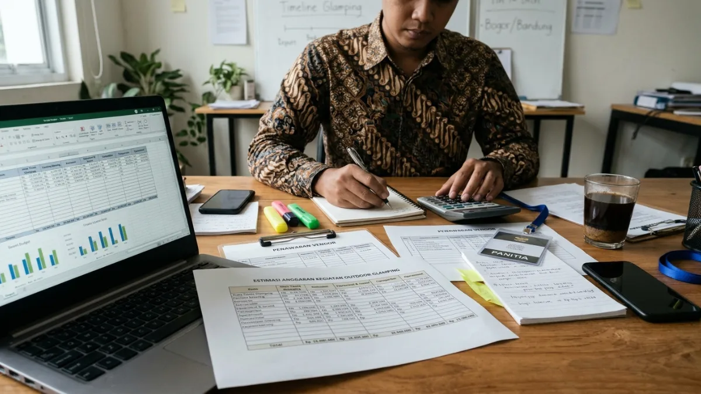
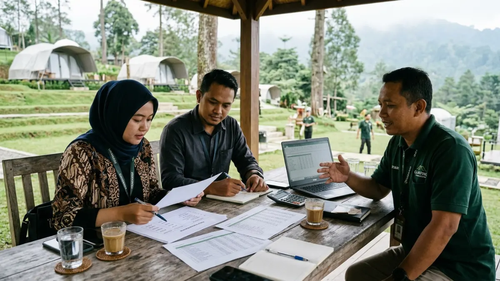

Ilustrasi: Penyusunan komponen biaya dan anggaran glamping meeting outdoor secara terperinci untuk tim perusahaan.Biaya glamping meeting outdoor terdiri atas akomodasi, ruang meeting, konsumsi, aktivitas, transportasi, dan biaya tambahan, dengan total yang bervariasi menurut lokasi, durasi, dan jumlah peserta.
- Biaya total mencakup lebih dari harga tenda: ruang meeting, konsumsi, aktivitas, transportasi, dan perlengkapan juga ikut dihitung.
- Harga berbeda menurut musim, hari kunjungan, tipe tenda, durasi, dan jumlah peserta.
- Biaya tersembunyi seperti listrik tambahan, penyewaan alat, dan denda perubahan jadwal sering luput dari perhitungan.
- Anggaran sebaiknya memuat dana cadangan sebagai antisipasi perubahan tak terduga.
- Perbandingan penawaran harus dilakukan berdasarkan isi paket, bukan hanya angka akhir.
- Apa Saja Komponen Biaya Glamping Meeting Outdoor?
- Faktor yang Membuat Biaya Glamping Meeting Outdoor Berbeda antar Paket
- Bagaimana Cara Menyusun Anggaran Glamping Meeting Outdoor Langkah demi Langkah?
- Biaya Tersembunyi yang Sering Terlewat dalam Anggaran
- Bagaimana Cara Menghemat Biaya Tanpa Menurunkan Kualitas?
- Bagaimana Membandingkan Penawaran dari Beberapa Vendor Glamping?
- Perbandingan Paket Inklusif dan Paket Terpisah untuk Meeting Outdoor
- Kesimpulan
- FAQ
Apa Saja Komponen Biaya Glamping Meeting Outdoor?
Komponen biaya utamanya adalah akomodasi menginap, sewa ruang meeting, konsumsi, aktivitas dan fasilitator, transportasi peserta, perlengkapan teknis, serta biaya administrasi dan cadangan.
Akomodasi biasanya menjadi komponen terbesar karena dihitung per tenda per malam dan berbeda menurut tipe. Ruang meeting dapat sudah termasuk dalam paket atau dihitung terpisah per sesi.
Konsumsi meliputi makan utama, kudapan, dan minuman, dan harganya dipengaruhi menu serta kebutuhan diet khusus.
Aktivitas seperti permainan kelompok, api unggun, atau kegiatan di sekitar lokasi dapat termasuk paket atau dikenakan biaya tambahan.
Jika menggunakan fasilitator eksternal, honornya perlu dimasukkan. Transportasi mencakup bus atau kendaraan sewa, bahan bakar, tol, dan parkir.
Terakhir, perlengkapan teknis seperti proyektor, sistem suara, dan penyewaan genset kadang tidak termasuk paket dasar.
Gambaran umum seluruh tahapan acara dapat dibaca pada panduan glamping meeting outdoor secara lengkap agar Anda tidak melewatkan komponen tertentu.
Faktor yang Membuat Biaya Glamping Meeting Outdoor Berbeda antar Paket
Perbedaan biaya dipengaruhi musim kunjungan, hari menginap, tipe tenda, durasi acara, jumlah peserta, kelengkapan fasilitas, serta isi paket konsumsi dan aktivitas yang disertakan pengelola.
Musim dan hari kunjungan memberi pengaruh paling terasa. Akhir pekan dan libur panjang umumnya lebih mahal dibanding hari kerja karena permintaan lebih tinggi.
Data Kota Batu mengonfirmasi perbedaan tekanan permintaan: triwulan IV 2025 mencatat 3.336.162 wisatawan, sedangkan triwulan III hanya 1.826.689, menurut Malang Post.
Tipe tenda juga berpengaruh. Tenda untuk dua orang, tenda keluarga, dan dome premium memiliki harga berbeda sesuai fasilitas dan ukuran.
Jumlah peserta mengubah skema harga karena pengelola dapat memberi tarif berbeda untuk rombongan besar.
Terakhir, kualitas paket konsumsi dan kelengkapan fasilitas meeting menentukan selisih harga. Paket yang tampak murah kadang hanya mencakup tenda tanpa ruang meeting dan makan, sehingga perlu dibandingkan dengan teliti.
Bagaimana Cara Menyusun Anggaran Glamping Meeting Outdoor Langkah demi Langkah?
Susun anggaran dengan menetapkan jumlah peserta dan durasi, mendaftar seluruh komponen, meminta penawaran tertulis, menjumlahkan total, lalu menambahkan dana cadangan untuk perubahan yang tidak terduga.
- Tetapkan jumlah peserta, jumlah malam, dan format acara.
- Buat daftar komponen: akomodasi, ruang meeting, konsumsi, aktivitas, transportasi, perlengkapan, dan asuransi.
- Minta penawaran dari dua sampai tiga lokasi dengan format permintaan yang sama agar mudah dibandingkan.
- Hitung biaya per peserta dan total biaya untuk setiap penawaran.
- Tambahkan dana cadangan sebagai ruang untuk perubahan jumlah peserta atau kebutuhan mendadak.
- Catat jadwal pembayaran dan batas pembatalan agar arus kas tidak terganggu.
Pendekatan biaya per peserta memudahkan pimpinan menilai kelayakan. Tabel anggaran yang rapi juga mempermudah pelaporan pertanggungjawaban setelah acara selesai.
Biaya Tersembunyi yang Sering Terlewat dalam Anggaran
Biaya tersembunyi yang sering terlewat meliputi tambahan listrik, sewa peralatan, biaya kebersihan, denda perubahan jadwal, biaya pengantar kendaraan kecil, dan konsumsi untuk panitia serta pendamping.
Beberapa pengelola mengenakan tambahan bila peserta melebihi jumlah yang tercantum atau bila ruang meeting dipakai melewati jam tertentu.
Biaya genset dan listrik tambahan kadang dihitung terpisah, terutama untuk acara dengan banyak perangkat elektronik.
Transportasi menjadi sumber kebocoran anggaran lainnya. Bus besar yang tidak dapat masuk ke area glamping memerlukan kendaraan pengantar, sehingga biaya sewanya perlu dihitung.
Panitia dan fasilitator juga membutuhkan akomodasi dan konsumsi, namun sering tidak dimasukkan dalam hitungan awal.
Terakhir, perhatikan kebijakan pembatalan. Cuaca buruk atau perubahan jadwal dapat menimbulkan denda atau hilangnya uang muka. Tanyakan ketentuan tersebut sebelum membayar, dan bila perlu pertimbangkan asuransi perjalanan kelompok.
Bagaimana Cara Menghemat Biaya Tanpa Menurunkan Kualitas?
Penghematan dapat dilakukan dengan memilih hari kerja, memesan lebih awal, menyederhanakan aktivitas, menggabungkan layanan dalam satu paket, dan menegosiasikan tarif rombongan tanpa mengurangi fasilitas inti.
Hari kerja biasanya memberi tarif lebih ramah dan ketersediaan tenda lebih longgar. Data Disparta Kota Batu mencatat rata-rata okupansi harian akomodasi sebesar 26,45 persen selama libur Lebaran 2025, menurut Malang Post, yang menunjukkan hunian tidak selalu penuh sehingga negosiasi tarif pada waktu tertentu masih memungkinkan, meski hasilnya tergantung kebijakan tiap pengelola.
Pesan lebih awal dapat membuka peluang tarif yang lebih baik dan menghindari harga musim ramai. Sederhanakan aktivitas dengan memilih kegiatan yang tidak memerlukan peralatan mahal, seperti permainan kelompok dan diskusi di api unggun. Gabungkan layanan dalam satu paket agar tidak ada biaya koordinasi tambahan.
Namun jangan memangkas hal yang menjadi inti acara, seperti sinyal, ruang meeting, dan konsumsi. Pemotongan pada komponen ini sering justru menurunkan kualitas dan mengurangi manfaat acara.
Pertimbangan pemilihan vendor yang lebih lengkap tersedia pada pembahasan cara memilih glamping meeting outdoor yang tepat.
Bagaimana Membandingkan Penawaran dari Beberapa Vendor Glamping?

Ilustrasi: Pembahasan dan negosiasi rincian paket glamping meeting outdoor bersama pengelola lokasi.Bandingkan penawaran dengan menyamakan format permintaan, memeriksa isi paket baris demi baris, menghitung biaya per peserta, dan menilai kebijakan pembatalan serta fasilitas teknis di luar harga.
Kirimkan permintaan penawaran dengan data identik: jumlah peserta, tanggal, jumlah malam, kebutuhan ruang meeting, dan konsumsi. Dengan cara ini, perbedaan harga benar-benar mencerminkan perbedaan layanan.
Buat tabel perbandingan sederhana dengan kolom isi paket, harga, biaya tambahan, kebijakan pembatalan, dan catatan fasilitas.
Hindari membandingkan hanya total akhir. Penawaran yang lebih rendah mungkin tidak mencakup ruang meeting, sedangkan penawaran yang lebih tinggi bisa sudah mencakup konsumsi dan aktivitas. Hitung biaya per peserta setelah semua komponen disetarakan.
Timbang juga faktor non-harga seperti kecepatan respons dan pengalaman menangani acara perusahaan. Pada akhirnya, penawaran terbaik adalah yang paling sesuai kebutuhan dan risikonya paling kecil, bukan yang termurah.
Perbandingan Paket Inklusif dan Paket Terpisah untuk Meeting Outdoor
Paket inklusif memudahkan pengelolaan karena semua layanan dalam satu harga, sedangkan paket terpisah memberi fleksibilitas menyesuaikan komponen dengan anggaran, tetapi menuntut koordinasi yang lebih besar.
Paket inklusif umumnya menggabungkan akomodasi, ruang meeting, konsumsi, dan beberapa aktivitas. Keunggulannya adalah kepastian biaya dan koordinasi yang sederhana.
Kekurangannya, Anda mungkin membayar layanan yang tidak dibutuhkan, dan penyesuaian menu atau aktivitas bisa terbatas.
Paket terpisah memungkinkan Anda memilih hanya komponen yang diperlukan, misalnya tenda dan ruang meeting, lalu mengatur konsumsi atau aktivitas sendiri.
Pendekatan ini dapat lebih hemat bila tim memiliki vendor atau kebutuhan khusus, namun risikonya adalah biaya koordinasi dan potensi komponen terlewat.
Dalam konteks industri yang bertumbuh, industri MICE Indonesia diproyeksikan mencapai USD 2,5 miliar sampai USD 3,2 miliar pada 2026, menurut Kontan. Persaingan penyedia yang semakin banyak memberi Anda ruang membandingkan skema paket yang paling sesuai.
Kesimpulan
Anggaran glamping meeting outdoor yang sehat dimulai dari daftar komponen lengkap, penawaran tertulis yang dapat dibandingkan, dan dana cadangan.
Perhatikan biaya tersembunyi dan kebijakan pembatalan sebelum membayar. Dengan cara ini, acara dapat berjalan sesuai rencana tanpa kejutan biaya.
Pertanyaan yang Sering Diajukan (FAQ)